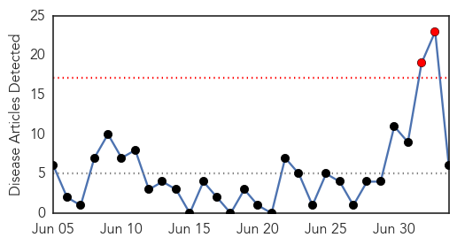
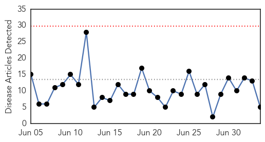
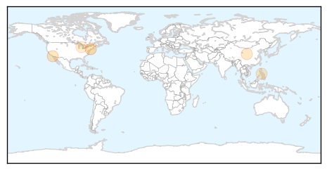

Measles
30-Day Web Trend
2 alerts, 0 warnings

30-Day Twitter Trend
1 alerts, 0 warnings

Article Locations

Article Confidences
Top Articles:
- 0.877
- Woman Dies of Measles in Washington State
- 0.856
- CORRECTED VERSION — Clallam County woman's death by measles is first in nation in 12 years and first in state since 1990 -- Port Angeles Port Townsend Sequim Forks Jefferson County Clallam County Olym
- 0.725
- Yemen crisis deteriorates
- 0.699
- Woman’s death from measles is first in US since 2003
- 0.506
- Vaccination law critics hold protest at Golden Gate Bridge
- 0.506
- Clallam County woman who died from measles was vaccinated
Top Tweets:
-
No tweets found for Jul 04, 2015
Influenza
30-Day Web Trend
0 alerts, 0 warnings

30-Day Twitter Trend
0 alerts, 0 warnings
Article Locations
Article Confidences
Top Articles:
Top Tweets:
-
No tweets found for Jul 04, 2015